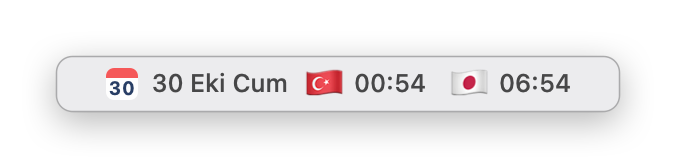
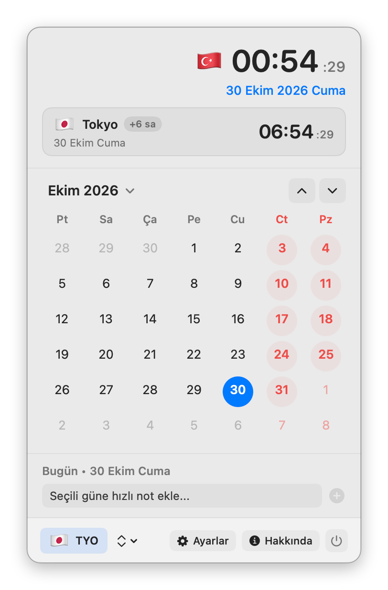

MacCalendar
Menu bar calendar and world clock
MacCalendar is a free, open-source macOS menu bar calendar with a dual world clock and country flags, a month view, quick notes for any day and more than 400 cities.
A free alternative to Itsycal, Dato and Clocker: a month calendar and a second time zone right in the menu bar.
Download MacCalendar for macOS (pkg)
Full documentation · All releases · Source code: GitLab · GitHub
Features
- Date and time in the menu bar in several formats, with an optional second city
- Dual clock with country flags, for example 🇹🇷 20:04 🇯🇵 02:04, in five layouts
- Month calendar with today highlighted and a Today button
- Quick notes for any day, marked on the calendar
- More than 400 cities and time zones, with custom labels
- English, Turkish or the system language; launch at login
Screenshots


Frequently asked questions
Is MacCalendar free?
Yes. MacCalendar is free and open source under the GPL-3.0 license, with no ads, no accounts and no in-app purchases.
How do I show a calendar in the Mac menu bar?
The macOS menu bar clock has no month view. Install MacCalendar and click the date in the menu bar: a month calendar opens with today highlighted, a Today button and quick notes for any day.
How do I add a second time zone or world clock to the Mac menu bar?
Turn on the dual clock in MacCalendar's Settings and pick any of more than 400 cities. The menu bar then shows both times with country flags, for example 🇹🇷 20:04 🇯🇵 02:04, and the calendar shows the time difference.
Does it show my Apple Calendar events?
No. MacCalendar shows the month grid and its own quick notes for each day; it does not read events from the Calendar app.
Which Macs does it run on?
Apple Silicon and Intel Macs with macOS 13 Ventura or later.
Why does macOS block it the first time?
MacCalendar is not notarized by Apple, which needs a paid developer account. Allow it once in System Settings ▸ Privacy & Security ▸ Open Anyway; see First launch.
Itsycal, Dato and Clocker are named only for comparison; MacCalendar is not affiliated with them.
Before you install
The apps are not notarized by Apple (that needs a paid developer account), so macOS blocks them the first time. Allow each app once in System Settings ▸ Privacy & Security ▸ Open Anyway. Every release lists a SHA-256 checksum.